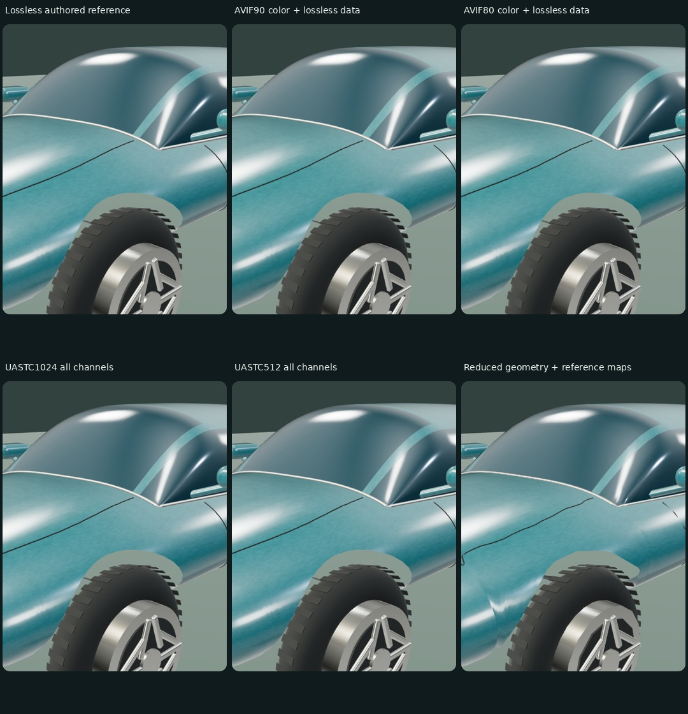
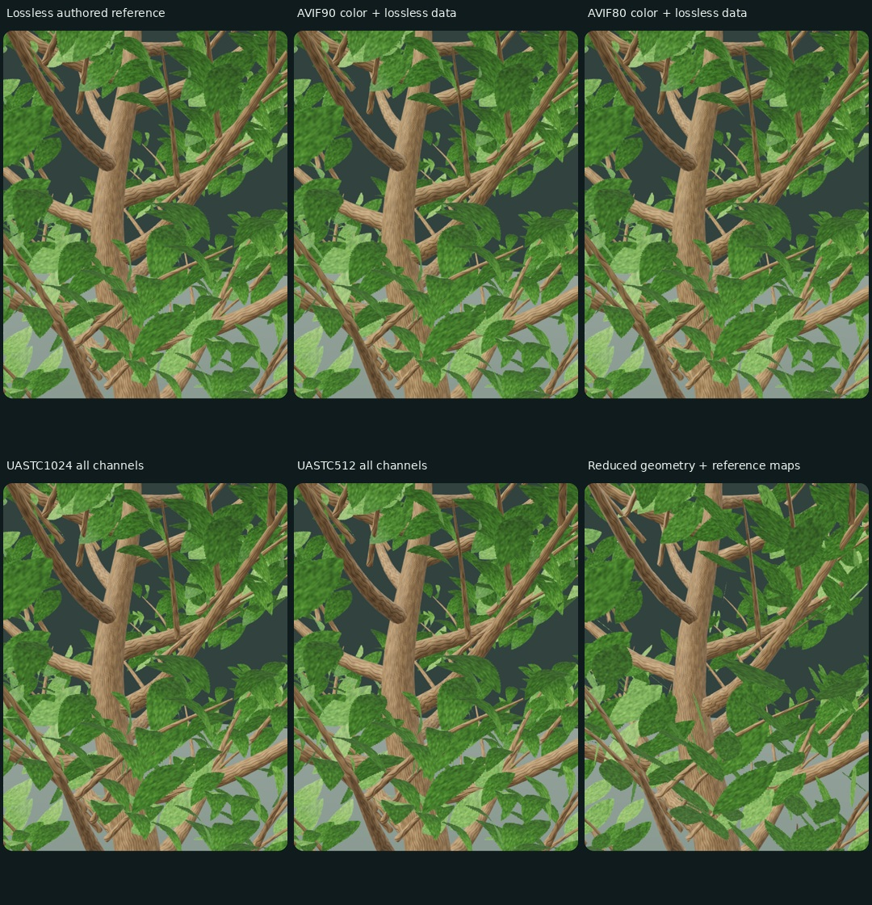
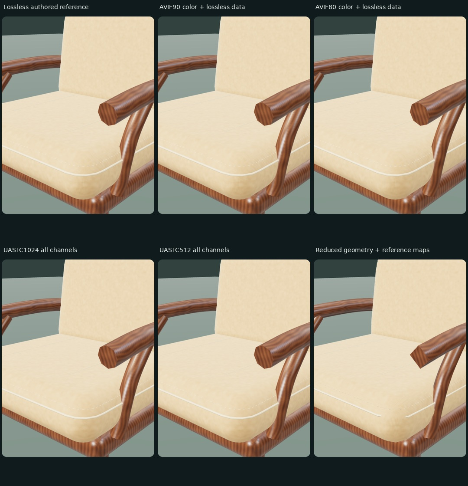

Desktop matrix and nine supplied iPhone choices. Read this after your blind choices to avoid format/cost cues.
iPhone findings and limits · Selected phone source fields



HE + PHOTONIC — PROVISIONAL CONTROLLED SUBJECT STUDY
Desktop matrix completed 2026-10-16; supplied phone choices are reported separately.
Supplied iPhone follow-up
-------------------------
One iPhone 13 observer supplied all nine first choices: six texture ties,
higher-detail car/chair geometry preferred, tree geometry tied.
UASTC512 remains a cheaper candidate; preserve salient nearby curvature.
All saved snapshots are static; no steady phone timings were supplied.
UI failures and an offscreen-canvas navigation fault make ties provisional.
Neither verified inspection of both sides nor population equivalence follows.
See IPHONE-STUDY-FINDINGS.txt and the explicitly selected-field source
iphone13-study-2026-10-16.selected.json. Full user JSON is archived in the research workspace.
The completed nine need no blanket repeat; target motion and mixed scenes.
Recommendation and confidence
-----------------------------
Keep a per-material delivery shortlist. UASTC1024 is a useful bounded-mip
candidate alongside UASTC512; neither is a selected universal production tier.
The AVIF routes here change color only and retain lossless normal/roughness;
UASTC routes compress all channels, and 512 changes resolution as well.
A smaller transfer, smaller mip payload and a preferred appearance are
different outcomes. Preserve native sources and inspect nearby detail.
In this matrix UASTC1024 used about 4× less mip payload than the reference;
UASTC512 used about 16× less. AVIF80 had the smaller encoded surface
files than UASTC1024 for all three subjects, but retained full map residency.
Every single-subject case remained near the desktop 60 Hz refresh plateau;
this does not establish equal GPU cost or a production object budget.
The desktop matrix summary counts zero human votes; the phone follow-up is separate.
What was actually measured
--------------------------
ANGLE (AMD, AMD Radeon RX 460 Graphics (radeonsi polaris11 ACO), OpenGL ES 3.2)
3 repetitions of 15 pairs = 45 pair runs / 90 timed candidate runs.
390x844 CSS mobile viewport, requested DPR 3 capped to 1.5 for the canvas;
actual pixel output is recorded in every row. Direct WebGL, ACES exposure
.95, MSAA, no shadows or wind. No network throttle or CPU slowdown.
These are desktop GPU timings, not iPhone FPS or full-engine capacity.
Each side uses 12 warmup frames then about 2 seconds of identical camera/
light motion from phase 0. No per-frame gl.finish. GPU timers asynchronous.
New context per repetition, but decoder/driver/OS caches may be warm.
References repeat in several pairs; their run count is larger than each
candidate. Table p95 is median of run p95s, not a pooled percentile.
Per-subject costs (surface files exclude shared recipe/renderer/transcoder)
------------------------------------------------------------------------
subject variant encoded MiB / mip MiB / geom MiB / triangles / frame p50,p95 ms / GPU p50 ms / runs
car reference 1.84 / 16.00 / 3.62 / 116464 / 16.7, 16.7 / 0.99 / 15
car avif90 1.64 / 16.00 / 3.62 / 116464 / 16.7, 16.8 / 0.99 / 3
car avif80 1.64 / 16.00 / 3.62 / 116464 / 16.7, 16.8 / 0.99 / 3
car uastc1024 1.86 / 4.00 / 3.62 / 116464 / 16.7, 16.7 / 0.97 / 3
car uastc512 0.44 / 1.00 / 3.62 / 116464 / 16.7, 16.7 / 0.97 / 3
car reduced 1.84 / 16.00 / 0.76 / 20088 / 16.7, 16.7 / 0.75 / 3
tree reference 3.46 / 32.00 / 2.87 / 77872 / 16.7, 16.7 / 1.46 / 15
tree avif90 1.65 / 32.00 / 2.87 / 77872 / 16.7, 16.7 / 1.46 / 3
tree avif80 1.49 / 32.00 / 2.87 / 77872 / 16.7, 16.7 / 1.46 / 3
tree uastc1024 3.80 / 8.00 / 2.87 / 77872 / 16.7, 16.8 / 1.42 / 3
tree uastc512 1.11 / 2.00 / 2.87 / 77872 / 16.7, 16.7 / 1.43 / 3
tree reduced 3.46 / 32.00 / 0.37 / 6150 / 16.7, 16.8 / 0.92 / 3
chair reference 4.15 / 32.00 / 1.21 / 32280 / 16.7, 16.7 / 0.82 / 15
chair avif90 3.01 / 32.00 / 1.21 / 32280 / 16.7, 16.7 / 0.98 / 3
chair avif80 2.87 / 32.00 / 1.21 / 32280 / 16.7, 16.8 / 0.82 / 3
chair uastc1024 3.42 / 8.00 / 1.21 / 32280 / 16.7, 16.7 / 0.80 / 3
chair uastc512 0.97 / 2.00 / 1.21 / 32280 / 16.7, 16.7 / 0.80 / 3
chair reduced 4.15 / 32.00 / 0.41 / 7960 / 16.7, 16.8 / 0.68 / 3
Geometry and surface interpretation
-----------------------------------
The master/reduced pair changes tessellation, not reference maps. Leaves keep
their deterministic locations; lower leaf curvature, branch sections, rounded
cushions and curved car sections can still change silhouettes and highlights.
The three authored masters are diagnostic fixtures, not scanned reality or
a claim that procedural authoring has won against all alternative pipelines.
They expose paint highlights, twigs/cutout leaf edges, piping and weaving;
the woven field is subtler at phone scale than the geometric seams.
Simple studio lighting/shadows-off also limits absolute realism judgments.
Rendered reference error was much larger for aggressive geometry reduction
than texture encoding in these views, particularly the tree leaf curvature.
That motivates inspecting geometry transitions before trading away curvature;
it is not a human preference verdict or proof about all trees/materials.
The car texture pairs change paint maps only. Chrome, rubber, opaque glazing
and lamps remain scalar controls; the fixed satin clearcoat reflection uses
an unperturbed coat normal. Subtle base paint changes make this a gentle
texture test, with no comparison of alternative car-generation or paint
construction methods. See the phone findings for the independent map trace.
Car/desk wear and coating controls are intended appearance variations;
their informed exploration records never overwrite first blind votes.
Fidelity evidence
-----------------
summary.json includes matched central 80% width / 70% height crops, an 8×8 block
grayscale SSIM-style value and RGB RMSE. These are reference-fidelity checks,
not realism, perceptual thresholds or human votes. View the exact captures
and motion in the page; a salient highlight/twig defect can evade a mean score.
Loading, authoring and accounting
--------------------------------
Three fresh-context initial useful-subject frames (ms from navigation): 2487, 1579, 1640.
Initial assigned subjects/pairs are randomized; these are not per-method cold
load comparisons. Pair preparation/first completion and resource timings are
separate raw records. Cold production startup is still a later investigation.
Shared study bundle: 786,192 file bytes; 214,145 gzip bytes (gzip is offline size, not a claim about Pages transport).
Shared three-subject recipe: 23,646 bytes; shared material module: 10,852 bytes.
Recipe bytes exclude Three.js, decoder, generated buffers/maps and source
dependencies. Mip/buffer values are payload accounting, not driver VRAM.
Per-side tables describe each representation: shared maps in an A/B pair
can reuse one allocation, so adding their entries can double-count sharing.
Within one side, shared texture objects/typed arrays are counted once.
Summing sides or CPU/GPU columns does not measure whole-process memory.
The summary separately records actual CPU geometry/mip array lengths and
estimated browser-owned RGBA image decode bytes. Browser/driver caches and
overhead remain unknown; those values are not a process-memory measurement.
Shared Basis files: 584,862 bytes ({'basis_transcoder.wasm': 527333, 'basis_transcoder.js': 57529}).
Frozen renderer build: c75c68663d9a3f0a; bundle SHA256 is recorded in summary.json.
Surface tools: NumPy 2.5.4 / Pillow 12.3.0 / KTX Software 4.4.2; Three 0.186.1.
Surface channel generation plus offline encoding recorded 98.1s total steps; this is not artistic start-to-finished authoring time.
Geometry implementation/repair timings and caveats are in subjects-notes.txt.
Recipes reused the existing Three.js/tool setup; the historical desk and its
real iPhone 13 evidence are preserved separately. No new image generation or
external model/texture import was used in this checkpoint.
Validation and exclusions
-------------------------
All 55 unique surface files pass hashes, dimensions and KTX header checks;
source normals are unit length within 8-bit quantization. Leaf RGB remains
colored outside alpha. Finite geometry/normals/UVs/tangents and nonzero
master/reduced bounds were checked. Raw triangle counts include documented
benign collapsed rounded-primitive triangles, not a watertight-topology claim.
The car cutout has a documented small lower arch-entry sampling limitation;
recipient review found its earlier pinched highlight resolved. See notes.
Browser acceptance covers blind UI/export, immutable votes, exact paused
camera/light/timeline matching, independent factors, real rAF counts, Stop
during delayed loads, hidden tabs/context loss and export/storage fallbacks.
A fresh recipient review prompted repairs to panel/piping attachments, wheel
arch highlights and a quantized-coordinate wear-field bug before the matrix.
Broken shader/GL uploads are invalid candidates, never assigned quality scores.
Implications for HE and Photonic
-------------------------------
Keep base material, coating and condition separate; preserve physical scale
and color/data semantics. Compatible finishes can share source maps, while
extra lobes, masks, refractive glass and program variants have runtime costs.
HE already has material roles, worker caching, merged geometry and streamed
tree/terrain tiers. Photonic already has procedural cloth/wear and shared
crowd/motion tiers. This lab does not present them as new inventions or
replace their interfaces. Photonic skin/hair/animated cloth still need their
own movement-aware tests; a static prop result cannot select those tiers.
Use these fixtures to test candidate delivery tiers first, then measure the
mixed scene with current renderer paths and actual resource admission.
Next real-phone questions
-------------------------
The supplied nine first choices are complete and preserved. Next discriminate
moving leaf/twig edges, paint highlights and cloth seams under matched motion,
especially UASTC512 and reduced tree geometry. Do not repeat all nine just to
obtain the same static observations. Power/thermal/cache/network remain contextual
unknowns unless supplied; one phone/observer does not establish a universal
default or safe production object budget. Future phases cover diverse mixed
streaming, sustained motion and actual Photonic animation/contact behavior.
Evidence
--------
assets/study-evidence/desktop-matrix.json and summary.json; exact PNG frames;
assets/study/manifest.json; source recipes; tests/study-browser.mjs and
tests/study-matrix.mjs; STUDY-PROTOCOL.txt; STUDY-IPHONE13-BASELINE.txt.
Informed finish/condition feature checks
----------------------------------------
Eight automated settings passed render/export validation. One pass per
setting with two matching sides; not human votes or a controlled causal
performance ranking. Whole-subject views differ from the close-view matrix.
Refractive glass adds transmission rendering targets/passes beyond source
map payload; those targets are not included in the mip-file accounting.
car-matte-clean: frame p95 16.8 ms; GPU p50 0.550 ms; draws [6, 6]
car-glossy-clean: frame p95 16.7 ms; GPU p50 0.604 ms; draws [6, 6]
car-glossy-clean-glass: frame p95 16.8 ms; GPU p50 1.363 ms; draws [11, 11]
car-glossy-worn: frame p95 16.7 ms; GPU p50 0.610 ms; draws [6, 6]
tree-satin-worn: frame p95 16.7 ms; GPU p50 0.827 ms; draws [3, 3]
chair-glossy-graphic: frame p95 16.7 ms; GPU p50 0.594 ms; draws [4, 4]
desk-matte-worn: frame p95 16.7 ms; GPU p50 0.545 ms; draws [5, 5]
desk-glossy-worn: frame p95 16.8 ms; GPU p50 0.617 ms; draws [5, 5]
Exact settings and preparation costs: assets/study-evidence/informed-features.json.
Derived result reproduction
---------------------------
scripts/summarize-study.py preserves aggregation, grayscale coefficients,
crop bounds and the 8×8 block formula/constants. It reads the raw matrix and
captured PNGs; timestamps and figure fonts are presentation metadata.
The included scientific figures compose the captured frames without
retouching. Screenshot pixels are browser-composited at the simulated DPR;
actual renderer-buffer dimensions remain separately recorded in raw rows.
Historical matrix deployment checks
-----------------------------------
Hosted browser acceptance: 10/10 groups passed, no browser errors.
HTTP/content checks: 73 public paths matched the published source,
including all 55 unique surfaces and Basis JS/WASM. This validates the
desktop browser at the public URL, not actual iPhone quality or speed.
Historical matrix content commit: e2044911d708d8f162250358a820823b13205825; current UI has its own build.
Evidence: assets/study-evidence/browser-acceptance-public.json and
assets/study-evidence/publication-validation.json.
Phone form repair
-----------------
Current interaction build: 7396763086827e49; 5 ordinary touch journeys passed locally.
Comments stay editable; first choices stay immutable; drafts and answers
resume after reload; nine answers end explicitly; Next brings the model
into view. Editing/resizing discards affected partial timing only.
Desktop Chromium touch/viewport emulation is not native iPhone Safari.
Evidence: assets/study-evidence/interaction-validation-local.json.
The same 5 journeys also passed at the public URL on this build.
Evidence: assets/study-evidence/interaction-validation-public.json.
Summary JSON · Raw matrix · Public browser checks · Public asset checks